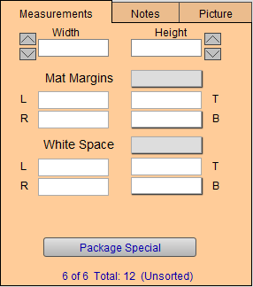
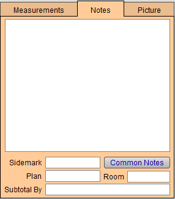
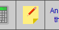
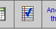
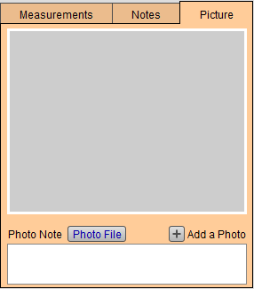

Measurement Entry Section
Lower-right quadrant of the screen.
Measurements Tab Explained
Upon opening a new Work Order, you will be prompted to begin by entering the orientation for the framing order. Continue through this tab as each field will be necessary to fill to ensure that the price quoted to your customer is accurate.

Width and Height Fields
-
These measurements can be typed in manually and also adjusted using the arrows to the left and right.
-
Enter the Width of the image (or opening of the mat if it is to overlap the image) as a whole number and fraction.
-
Enter the Height of the image (or opening of the mat if it is to overlap the image) as a whole number and fraction.
-
Enter the amount of white to appear around a limited edition print in White Space.
Orientation Icon
-
In the center is the orientation button based on your response to the initial pop up window when starting the new Work Order. See: Set up Orientation Dialog
-
If you have selected the Show Orientation Dialog checkbox, then another box appears above these two fields. The Orientation icon indicates the vertical or horizontal direction of the artwork.
-
With this option selected, when you create a new Work Order then a dialog box appears asking to select an orientation.You may choose to by-pass this by clicking None. If you select None, the icon will not appear on your screen but a square icon appears on the printed work order. The orientation you do select will appear on the screen and on the printed Work Order.

Mat Margins Fields
-
The total measurement of all mats added to the framed piece. Multiple mats and fillets will be combined into this specific total.
-
The Matboard Margins in this field indicate the total amount of margins to appear between the image and the frame. Use the Mat Margins pop-up menu to quickly enter all four matboard margins at once. Select the appropriate number from the menu of pre-entered amounts or use the Edit... feature to customize the list or use Other... to create a one-time entry.
-
Click in each individual field to enter the mat dimensions (L = left, R, T, B) manually.
-
In order to bottom weight, click in the field (beside the letter B) to enter the bottom weight manually. You may set default Bottom Weights here: Set up Work Order Default Options. If you have selected this option, FrameReady will auto-fill the bottom weight on all new Work Orders. As always, this may be over-ridden
White Space Margins
-
This is the amount of space around a print/artwork that should show before you reach the mat opening. The numbers appearing in this area indicate the total White Space to be added to the width and height of the image.
-
Commonly used to show signatures, titles and other important details not directly on the artwork.
-
For example, use this feature when allowing space for signatures on L/E prints. If the signature on a Limited Edition print is large, then you may need to manually adjust the bottom white space.
Package Special Button
-
This feature will allow you to create any number of predetermined framing configurations and then auto-fill the details into a Work Order simply by entering an abbreviation or code name.
-
Package Specials is convenient place to store Work Order templates that represent special offerings. There is no limit to the number of package that can be stored. Each package special must have its own identifying code. The components that make up a package special can be actual items or they can be generic, .eg., wood up to 16x20.
Notes Tab Breakdown
Use the notes tab to collect the basic information regarding what is the purpose of the Work Order, details regarding where the piece will be displayed, and the name your client uses for their design project.

Notes Field
-
The main field in this section for documenting notes on the Work Order for you, your production team and/or the customer that will be included in printed copies of the Work Order.
-
This field can also be accessed from the top toolbar.

-- When there are no notes currently in the note field.

-- When there are notes in the note field.
Common Notes Button
-
Click to view previously-entered notes; click one to insert the text into the Notes field.
-
To add a new note, click the Common Notes button, then click Edit...
Sidemark Field
-
Add a project name or other identifying title to clarify and identify the project.
-
Used for corporate clients and refer to installation locations.
Plan Field
-
Order that it is attached to.
-
Used by corporate clients and interior designers for example in model homes.
Room Field
-
Room where art will be placed.
Subtotal by Field
-
Entries will transfer to the Invoice and create Invoice Categories by which each total is subtotaled together.
Picture Tab Breakdown
The Picture tab is a simple place to upload a picture of the artwork to ensure that the production team works with the correct artwork and orientation. Take a picture with your phone, iPad, or bring in a completed visualization design from your preferred visualization software.
-
See also: Resize Digital Images

Photo File Button
-
Select this button to bring up a dialogue box that will allow you to connect to an image file already saved on your computer. These images will be printed on the Work Order and Invoice paperwork. You can add an unlimited number of images to a Work Order.
Photo Note
-
A field that will allow you to take quick notes regarding the images that you attach to the order.
Advanced Tips for the Measurements/Notes/Pictures Tabs
As you continue to use FrameReady, you’ll find new ways to use these tabs to benefit your business. They are flexible and can always be used how you see fit, but ensure that your team is always aware of the standards you are setting within your frame shop. Here are a few tips we recommend for using these tabs.
© 2023 Adatasol, Inc.